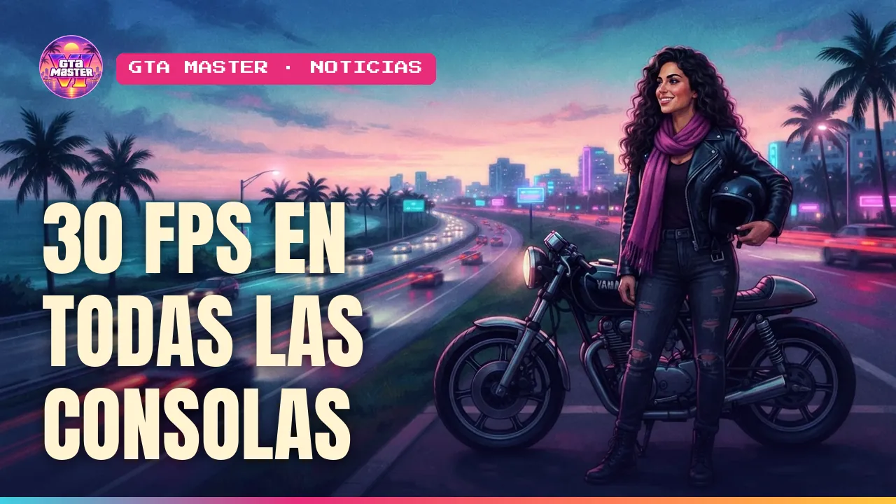

Noticias
Noticias
30 fps en todas las consolas: así funciona GTA 6 en PS5, PS5 Pro y Xbox

Rockstar confirma 30 fps en PS5, PS5 Pro y Xbox Series X|S. Las resoluciones por consola que ha publicado Wccftech, el reescalado de cada una y si llegará un modo a 60 fps.
Es la gran conversación técnica del lanzamiento. Rockstar ha confirmado que GTA 6 apunta a 30 fps en PS5 y Xbox Series X|S, incluida la PS5 Pro, como detalla Notebookcheck. No hay modo rendimiento en el lanzamiento.
Resolución por consola
Hoy se han conocido más detalles. GameNewsPlus recoge un informe exclusivo de Wccftech basado en explicaciones técnicas de tres responsables de tecnología de Rockstar durante el periodo de análisis:
| Consola | Resolución base | Salida y reescalado |
|---|---|---|
| PS5 Pro | 1440p | 4K con PSSR 2 de Sony |
| PS5 | 1440p | 4K con el TAA propio de Rockstar |
| Xbox Series X | 1440p | 4K con el TAA propio de Rockstar |
| Xbox Series S | 720p | 1080p con AMD FSR 4 |
El dato de PS5 encaja con el análisis de Digital Foundry citado por TweakTown: 2560×1440 nativos a 30 fps estables. Mientras Rockstar no lo publique en su web, tómalo como información de prensa, no como ficha oficial.
¿Y los 60 fps?
De momento, no. TweakTown recuerda que el equipo técnico de Rockstar todavía no sabe si habrá un modo a 60 fps más adelante. TechRadar apuesta por un modo a 40 fps en PS5 Pro con pantallas de 120 Hz como término medio.
El precedente no invita al optimismo: Red Dead Redemption 2 sigue sin modo oficial a 60 fps en consolas.
Lo que dicen las reseñas
La buena noticia: en las reseñas publicadas hoy el rendimiento apenas aparece como problema. VGC menciona pequeños fallos de rendimiento que no estropean la experiencia, según el resumen de Tom's Guide.


Comentarios
Los comentarios funcionan con Disqus: puedes entrar con Google, Facebook, X o tu email. Al pulsar el botón se conecta con Disqus, que usa sus propias cookies. Más información en nuestra política de privacidad.